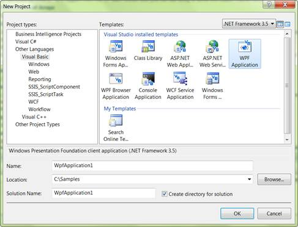
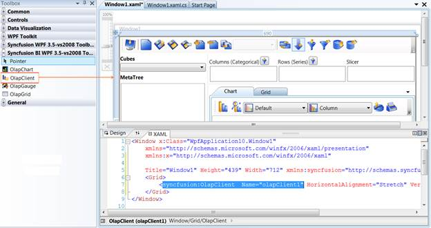

To create OLAP Client for WPF:
1. Click Start -> All Programs -> Microsoft Visual Studio 2008 or Microsoft Visual Studio 2010
2. Now navigate to File -> New Project. The New Project dialog box appears.

Figure 7: New Project Dialog window
3. Select WPF Application in the New Project dialog box and click OK. A new WPF application gets created.
4. In the new WPF application’s tool box you can find the OLAP Client control under the tab named “Syncfusion BI WPF <3.5-vs2008 or 4.0-vs2010> Toolbox <Essential studio version number>”. Drag and drop the OLAP Client control onto the window.
The following assemblies will be automatically referenced in your application.
· Syncfusion.Chart.WPF
· Syncfusion.Shared.WPF
· Syncfusion.Olap.Base
· Syncfusion.OlapChart.WPF
· Syncfusion.OlapGrid.WPF
· Syncfusion.OlapSampleUtils
· Syncfusion.OlapTools.WPF
· Syncfusion.Tools.WPF

Figure 8: Adding OLAP Client to an Application
|
[XAML]
< syncfusion : OlapClient Name ="olapClient1" HorizontalAlignment ="Stretch" VerticalAlignment ="Stretch"/>
|
5. The height, width and other properties of OLAP Client control are set through the property window or manually in the source code as well as in the code behind region. For example, the height and width property, set in the source code region is shown below:
|
[XAML]
< syncfusion : OlapClient Name ="olapClient1" Height ="600" Width ="700"/>
|
6. Now navigate to the code-behind file. In order to bind the OLAP Client control with cube data, the OlapDataManager is instantiated first through any one of the methods in the page load event. The OlapDataManager containsthe connection details, current report, cube name, cube schema and pivotengine for rendering the client control. Then it is assigned to OLAP client datamanagerand databind is done.
Binding OLAP Client to the server
|
[C#]
OlapDataManager olapDataManager = new OlapDataManager ( "Data source=localhost; Initial Catalog=Adventure Works DW" ); this .olapClient1.OlapDataManager = olapDataManager; this .olapClient1.DataBind();
|
|
[VB]
Dim olapDataManager As OlapDataManager = New OlapDataManager( "Data source=localhost; Initial Catalog=Adventure Works DW" ) Me .olapClient1.OlapDataManager = olapDataManager Me .olapClient1.DataBind() |
Binding OLAP Client to Offline Cube
|
[C#]
OlapDataManager olapDataManager = new OlapDataManager ( "Datasource=AdventureWorks.cub; Provider=msolap;" ); this .olapClient1.OlapDataManager = olapDataManager; this .olapClient1.DataBind();
|
|
[VB]
Dim olapDataManager As OlapDataManager = New OlapDataManager( "Datasource=AdventureWorks.cub; Provider=msolap;" ) Me .olapClient1.OlapDataManager = olapDataManager Me .olapClient1.DataBind()
|
Binding OLAP Client to the server using Data Provider
|
[C#]
AdomdDataProvider dataProvider = new AdomdDataProvider (connectionString); OlapDataManager olapDataManager = new OlapDataManager (dataProvider); this .olapClient1.OlapDataManager = olapDataManager; this .olapClient1.DataBind();
|
|
[VB]
Dim dataProvider As AdomdDataProvider = New AdomdDataProvider(connectionString) Dim olapDataManager As OlapDataManager = New OlapDataManager(dataProvider) Me .olapClient1.OlapDataManager = olapDataManager Me .olapClient1.DataBind()
|
Tip: Users can also connect a Server or Offline cube through the connection option dialog window.
 Connection Option
Connection Option